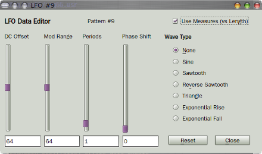
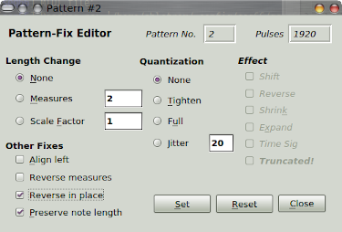

|
The Tools button provides for note selection,
quantization, pitch and harmonic transposition, an LFO
generator, and a "pattern fixer". The figure below shows the
LFO and Pattern-fix dialogs.
|
|
LFO Generator.
The LFO generator allows one to apply modulation
to the events shown in the data pane.
The following adjustments can be made:
-
DC Offset.
Provides the basic level of the adjustment.
-
Depth.
Provides the modulation depth.
-
Period.
Provides the number of periods in the modulation, where
period applies.
-
Phase.
Provides the modulation phase, if applicable.
-
Use Measures (vs Lenght).
Determines the duration to use.
-
Wave Type.
Determines the wave to use, such as sine and triangle
waves.
Pattern Fix.
This dialog allows for multiple ways to alter/fix a
pattern, useful for people with lousy timing, etc.
The following adjustments can be made:
-
Length Change.
One can change the number of measures,
the time-signature (tricky), and the scale factor.
Note that here, changing measures rescales the pattern,
unlike changing the measure in the pattern-editor.
-
Quantization.
Provides tightening/full quantization, and also
time jitter.
-
Other Fixes.
Provides left-alignment, pattern reversal, and the
option to preserve note length.
period applies.
|


|